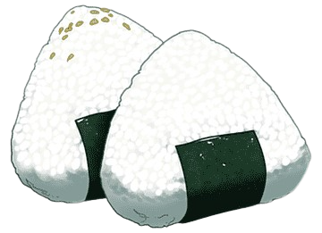

Назад

Онигири - одно из самых популярных блюд среди любителей аниме, именно онигири любил Зеницу из «Клинка рассекающего демонов»,но как же готовятся эти вкусные треугольники ?
Ингредиенты:
- Рис – 300 г
- Кацуобуси* – 2 г
- Зеленый лук – 5 г
- Соевый соус – 1 чайн. ложка
- Майонез – 1 ст. ложка
Способ приготовления:
- Сварите рис и нарежьте мелко зеленый лук.
- В глубокую миску положите сваренный рис, кацуобуси и зеленый лук. Все ингредиенты хорошенько перемешайте.
- Полученную массу разделите на 4 равные порции, каждую заверните в пищевую пленку и сформируйте их в треугольную форму.
- Снимите пищевую пленку и положите на тарелку.